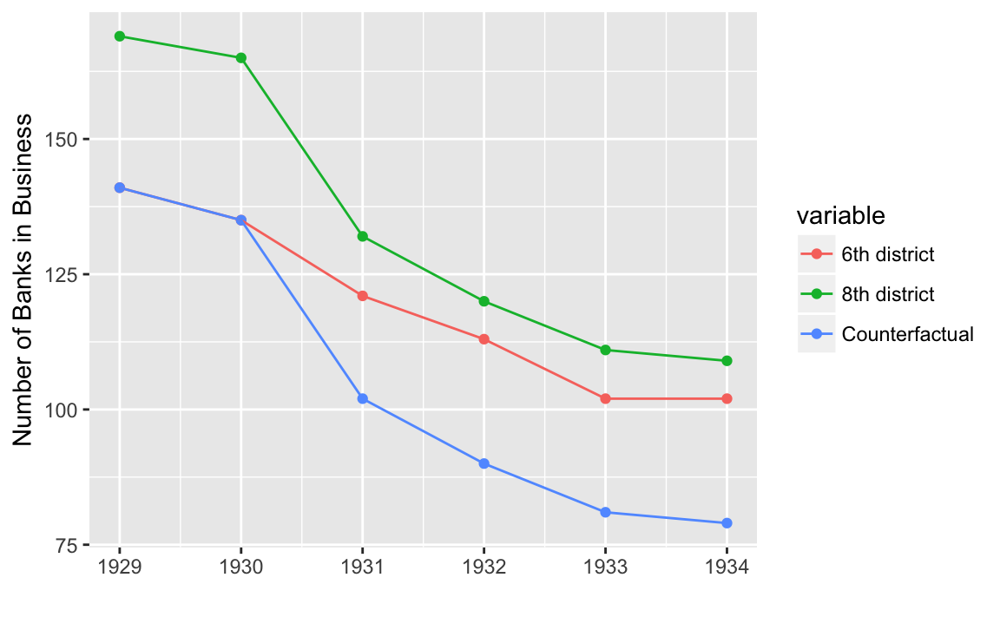

4 “Bank Failures”
Richardson and Troost bank failure data and results, which produce Figures 5.1–5.3 in Mastering Metrics.
Derived from the master_banks.do file. Also see the associated documentation.
library("tidyverse")
#> ── Attaching packages ─────────────────────────────────────── tidyverse 1.2.1 ──
#> ✔ ggplot2 2.2.1 ✔ purrr 0.2.4
#> ✔ tibble 1.4.2 ✔ dplyr 0.7.4
#> ✔ tidyr 0.8.0 ✔ stringr 1.3.0
#> ✔ readr 1.1.1 ✔ forcats 0.3.0
#> ── Conflicts ────────────────────────────────────────── tidyverse_conflicts() ──
#> ✖ dplyr::filter() masks stats::filter()
#> ✖ dplyr::lag() masks stats::lag()
library("lubridate")
#> Loading required package: methods
#>
#> Attaching package: 'lubridate'
#> The following object is masked from 'package:base':
#>
#> dateRead the input data, banks.csv
filename <- here::here("data", "banks.csv")
col_types <- cols(
date = col_integer(),
weekday = col_character(),
day = col_integer(),
month = col_integer(),
year = col_integer(),
bib6 = col_integer(),
bio6 = col_integer(),
bib8 = col_integer(),
bio8 = col_integer()
)
banks <- read_csv(filename, na = "", col_types = col_types) %>%
filter(month == 7L, day == 1L) %>%
select(year, matches("bi[ob][68]")) %>%
arrange(year) %>%
mutate(diff86 = bib8[year == 1930] - bib6[year == 1930],
counterfactual = if_else(year > 1930, bib8 - diff86, bib6))
glimpse(banks)
#> Observations: 6
#> Variables: 7
#> $ year <int> 1929, 1930, 1931, 1932, 1933, 1934
#> $ bib6 <int> 141, 135, 121, 113, 102, 102
#> $ bio6 <int> 141, 135, 121, 111, 100, 102
#> $ bib8 <int> 169, 165, 132, 120, 111, 109
#> $ bio8 <int> 169, 165, 130, 118, 110, 108
#> $ diff86 <int> 30, 30, 30, 30, 30, 30
#> $ counterfactual <int> 141, 135, 102, 90, 81, 79Plot the lines of the 8th, 6th, and 6th counterfactuals.
select(banks, year, bib8, bib6, counterfactual) %>%
gather(variable, value, -year) %>%
mutate(variable = recode(variable, bib8 = "8th district",
bib6 = "6th district",
counterfactual = "Counterfactual")) %>%
ggplot(aes(x = year, y = value, colour = variable)) +
geom_point() +
geom_line() +
ylab("Number of Banks in Business") +
xlab("")
Difference in difference estimate over years,
ggplot(filter(banks, year > 1930), aes(x = year, y = bib6 - counterfactual)) +
geom_point() +
geom_line() +
ylab("DID (Number of Banks)") +
xlab("")